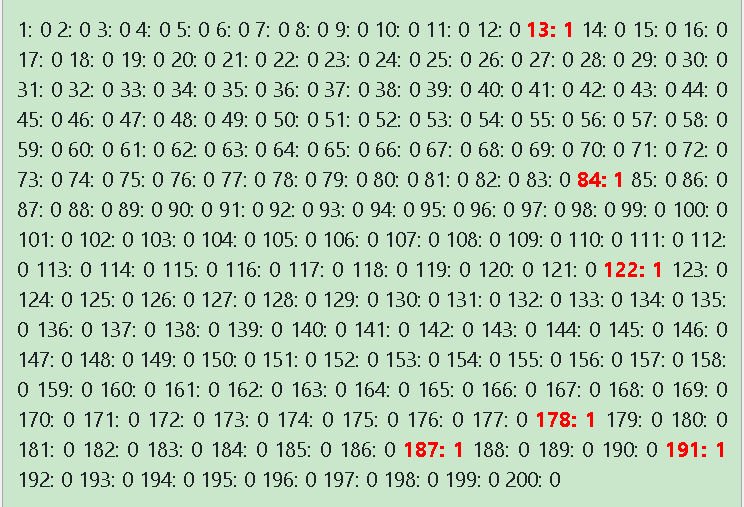

Majom az írógépnél
'A fűráhüly bűrónyje megívínyte a fisóny kősejét.'
 Egy majom ül egy
írógép előtt. Az írógépen csak nagybetűk és egy sorváltó billenytű
van. A majom egymás után nyomkodja az írógépen az ábécé betűt, majd időnként új sort
kezd.
Természetesen
teljesen
értelmetlen betűsorozatokat ír le egymás után.
Egy majom ül egy
írógép előtt. Az írógépen csak nagybetűk és egy sorváltó billenytű
van. A majom egymás után nyomkodja az írógépen az ábécé betűt, majd időnként új sort
kezd.
Természetesen
teljesen
értelmetlen betűsorozatokat ír le egymás után.
Egy gondozó figyeli a majom munkáját, és ha betelt a lap, akkor új lapot fűz a gépbe. Ez
addig
tart,
amíg meg nem jelenik egy értelmes magyar szó a papíron. Ekkor a
gondozó
elveszi a majomtól a papírt és ad neki egy banánt. Az összegyűjtött papírlapokat pedig
300
oldalas
kötetekbe
köti, s
átadja Önnek.
Az utolsó kötet utolsó lapjának utolsó sorában szerepel az az első értelmes szó, amelyet
a
majom
végül
leírt.
Vajon
hány kötetet fog átadni Önnek a gondozó?
- A program egy 2.1 GHz-s processzorral rendelkező gépen egy másodperc alatt átlagosan 10 000 betűt képes 'legépelni'.
- Egy 5 betűs értelmes szó létrehozása a programnak átlagosan 6 másodpercig tart.
- Egy 6 betűs értelmes szó létrehozásához kb. 3 percre van szüksége a programnak.
- Egy 7 betűs értelmes szó létrehozása már 96 percig tart tart.
- Egy 8 betűs értelmes szó létrehozásához átlagosan 57 órán keresztül kellene futnia a programnak.
- Minden újabb betű 35-szörösére emeli a program futásának az átlagos időtartamát, hiszen az ábécé - amit a program használ - 35 betűből áll. Persze ez az időtartam kisebb mértékben attól is függ, hogy hány - adott számú betűt tartalmazó - szó szerepel a program által használt szószedetben.
- Egy 9 betűs értelmes szó megtalálásához a programnak már 98 napra lenne szüksége, s a teleírt kötetek egymásra pakolva 7 887 méter tennének ki. Ez a könyvrakás tízszer olyan magas lenne, mint a világ legmagasabb felhőkarcolója, a Burdzs Kalifa, amely Dubajban található (828 m).
- Egy 13 betűből álló értelmes szó - pl.: 'asztrofizikus' - megtalálásához nagyjából 2,2 millió évre lenne szükség.
- Egy 15 betűből álló értelmes szó - pl.: 'tengeralattjáró' - kirakásához átlagosan 9 milliárd évre van szükség. Ez az időtartam nagyságrendileg az univerzum életkorával (13,8 milliárd év) áll egy csoportban. Ez azt jelenti, hogy ha az ősrobbanás pillanatában indult volna el a programunk, akkor - nagy átlagban - az azóta eltelt felfoghatatlan hosszúságú idő ellenére is csak egy darab 15 betű hosszúságú értelmes szót talált volna, s jelenleg a második ilyen szót keresné azóta, hogy az első prokarióta egysejtűek megjelentek a földön. S a második 15 betűs értelmes szót nagyjából akkor fogja megtalálni, mikorra a nap már vörös óriássá változott, s felforralt mindent a Föld felszínén..
|
A program állapota: Hosszabb futás esetén részinformációk a konzolon! |
- |
|
Íme a szó: |
- |
|
A szó jelentése a magyar nyelv értelmező szótárában: |
|
|
A program ennyi ideig futott: |
- |
|
A lapokon található összes szó [sor] száma együttesen: |
- |
|
A lapok száma összesen: |
- |
|
Az átadott kötetek száma: |
- |
Jobbra láthatja az utolsó kötet utolsó oldalát - az utolsó sorában van az Ön szava.
Szeretne belelapozni a kötetekbe? Megteheti! Lapozhat akár előre és hátra is!
Akár átugorhat egy kiválasztott oldalra is!
Az Ön kötetei a - oldaltól a(z) - oldalig terjednek. Egy oldal 40 sor terjedelmű.
Kattintson rá valamelyik betűsorotatra, majd az egyik kereső gombjára, s megnézheti, hogy a világon van-e valahol jelentése annak a karaktersorozatnak, amelyet kiválasztott. (Javasoljuk, hogy ékezet nélküli betűsorozatot válasszon! Ötlet: hosszabb betűcsoportokra a Baidu adja a legpontosabb találatokat.)
Az átadott könyvben kereshet adott betűmintázatú 'szavakat' is. A mintázat
megfelelő helyére
írja be
a kiválasztott betűt, a többi betű helyére pedig tegyen egy-egy '
✶' jelet.
Pl.: a 'H✶K' - azokat a karaktersorokat
listázza ki, ahol az
első karakter a 'H', a harmadik pedig a 'K'. (Ha nem tölti ki
teljesen
az input mezőt, akkor a program '✶' karakterekkel fogja feltölteni a
fennmaradó
üres
helyeket.)
Magyarázat: A majom összesen - karaktersorozatot írt le, mire megtalálta az első - betűből álló értelmes szót. Az ábécé 35 betűs, ezért ugyanaz a(z) betűből álló karaktercsoport átlagosan 35kitevő = szavanként fordul elő, azaz a(z) - szó között nagy átlagban - / 35kitevő = eredmény db. található belőlük.
Klikkeljen a 'Mehet' gombra, s ekkor a program 100-szor egymás után lefuttatja a 'a majom 4 betűs szavakat keres' programrészt, majd megnézi, hogy a szólistán hány olyan szó van, amelynek az első (ill. az első kettő, az első három, stb.) karaktere megegyezik a talált szóval.
Futásidő:Futás tényleges ideje:
Ha látni szeretné, hogy az egyes betűszámok esetén hány betűkombináció lehetséges és ezek között hány értelmes szó van, akkor kattintson a 'Mutat' gombra!
Beállíthatja a programot úgy is, hogy a majom többször fusson neki és adott hosszúságú szavakat keressen. Ekkor egy-egy grafikonokon láthatja majd, hogy az egyes 'futások' során a majom milyen hosszúságú szólistákat írt le, s az adott hosszúságú szólisták az előfordulásaik száma szerint hogyan oszlanak meg.
A program lefutásának várható ideje ezzel a beállítással (becsült érték!):
-
Képzeljük el, hogy minden egyes futás után a megkapott köteteket egy-egy kupacban lerakjuk a földre. Ezek a kupacok - a futás hosszától függően - különböző magasságúak lesznek. Az első 1000 könyvkupac magasságsorozatát látja a következő grafikonon.
Azaz a grafikon azt mutatja meg, hogy az első 1000 futás során futásonként hány betűsorozatot gépelt le a majom. Az egyes oszlopok az egyes gépelési sorozatok, ahol az oszlop magassága jelzi azt, hogy milyen hosszú volt a gépelés, azaz hány értelmetlen jelsorozat után kapott a majom egy értelmes szót.
Tulajdonképpen egy fésűmintázatot látunk, ahol a különböző magasságú fésűfogak teljesen véletlenszerűen követik egymást és semmilyen szabályosság nem mutatható ki ebben a magasságsorozatban - azon túl, hogy minél magasabb egy oszlop, annál ritkábban fordul elő.
A következő táblázat a sorozat elemeinek főbb jellemzőit listázza ki.
| Ennyiszer futott neki összesen a majom: | - |
| Ennyi betűsorozatot írt le összesen a majom az összes nekifutás során: | - |
| Ennyi betűsorozatot írt le átlagosan a majom egy nekifutásra: | - |
| A legrövidebb lista szó-száma: | - |
|
Ebből a listából ennyi van: Az első oszlop magassága a grafikonon |
|
| A leghosszabb lista szó-száma: | - |
| Ebből a listából ennyi van: | - |
|
A legtöbbször előforduló lista szószáma: | |
|
Ebből a listából ennyi van: Ez a legmagasabb oszlop a grafikonon. |
|
| Futásidő: | - |
Magyarázat:
Kérem a teljes eloszlásfüggvény 'az ennyi sort tartalmazó listából - ennyi van' értékpárjainak felsorolását! A táblázat - értékpárt tartalmaz.
Kérem a tömörítetlen oszlopgrafikon felrajzolását! A grafikon felrajzolásának az ideje: - .
Eloszlás típusok:

Ez egy 'szép eloszlás'. A program a 'majom két betűs szavakat keres' beállítással lett lefuttatva 100-szor.
Összesen 36 oszlopunk van, s az egyes oszlopok magasságai: 0, 9, 13, 8, 3, 8, 6, 6, 6, 5, 4, 3, 4, 4, 3, 0, 2, 0, 2, 1, 1, 2, 1, 1, 1, 0, 0, 0, 0, 2, 1, 1, 0, 0, 1, 1, 0 .
Jól látható, hogy 'az elsőre talált egy értelmes szót esetből 9 db. van. A másodjára talált egy értelmes szót esetből 13 db. van, s ez a legmagasabb oszlop. A 'harmadjára talál egy értelmes szót' esetből 8 db. van. És így tovább. Láthatjuk, hogy az oszlopok magassága fokozatosan csökken, azaz az egyre hosszabb listákból egyre kevesebb van. Ezeknél a 'szép' eloszlásoknál meg tudjuk keresni a burkológörbét.

Ez pedig egy 'nem szép eloszlás: a majom most 5 betűs szavakat keresett 800-szor egymás után. A leghosszabb próbálkozása 98 325 (!) karaktersor volt.
Ez azt jelenti, hogy 98 325 oszlop áll egymás mellett az eredeti grafikonon - szemben az előző grafikon 36 oszlopával. (Az ábrán persze nem látjuk mind a 98 325 oszlopot, csak nagyságrendekkel kevesebbet, mert az oszlopok össze lettek vonva, hogy egyszerűbb legyen ábrázolni az eloszlást. (Persze (egy oszlop 1024 egymás melletti eredeti oszlopot jelöl, s az oszlopcsoportot képviselő oszlop magassága azonos a csoport legmagasabb oszlopának a magasságával. - De mindettől most tekintsünk el.)
Viszont csak 800 listánk lesz, amit 98 325 különböző magasságlehetőség között kell elosztanunk. Így sok magasság lesz, ahova nem jut lista - itt 0 magasságú az oszlop a grafikonon. (Valójában az oszlopok 99%-a ilyen - 0 magasságú -, de ez most nem látszik az oszlopok összevonása - a tömörítés - miatt.)
Hasonlóan sok oszlopmagasságnak csak egy-egy lista jut, s ezek lesznek az 1 magasságú oszlopok. Végül akad néhány 'szerencsésebb' oszlopmagasság is, amelyeknek két-két lista jutott, s ezek a 2 magasságú oszlopok. S láthatjuk azt is, hogy éppenséggel egy oszlopmagasságunk sincs, amelynek három vagy több lista jutott volna.
Mindez azt eredményezi, hogy az oszlopgrafikon 'lelapult', mintegy 'ki lett simítva', azaz itt már nem csökken az oszlopok magassága a listahossz függvényéban.
Vegyük észre, hogy a két grafikon között az a lényeges különbség, hogy az elsőnél 100 'golyót' kellett szétosztani 38 dobozba, s így volt olyan doboz, amibe sok golyó jutott. A második esetben viszont 800 'golyót' kellett elosztani 98 325 dobozba, így még az a doboz is 'jól járt', amelyikbe csak egy 'golyó' jutott.
A 'nem szép' eloszlás
De hogyan is néz ki egy nem szép eloszlás oszlopgrafikonja, ha nem tömörítjük a táblázatot? Pl. nézzünk egy konkrét eloszlást 'a majom öt betűs szavakat keres 500-szor' beállítással.
A program ezzel a beállítással kb. egy órán keresztül futna, majd kapnánk egy beláthatatlanul hosszú grafikont. Most nézzünk helyette egy előre lefuttatott eredményt!
Ha
elkezdenénk vízszintesen görgetni a grafikont, akkor különböző hosszúságú üres részek
után
mindig egy-egy
1 magasságú oszlopohoz jutnánk el, majd újabb hosszabb-rövidebb görgetés után ismét
egy ugyanilyen magasságú oszlopot találnánk. S összesen 500 ilyen 1 magasságú oszlop
lenne
elosztva a grafikon - 98 325
egység hosszúságú - ürességében.
Nézzük meg ennek a konkrétan lefuttatott sorozat grafikonjának az első 200 helyét!
Láthatjuk,
hogy az 1 magasságú oszlopok eléggé 'gyéren' helyezkednek el rajta.
Burkológörbe felrajzolása:

A képen 'a majom 3 betűs szavakat keres 1000-szer' eloszlás oszlopgrafikonjait látjuk. Az első oszlop magasága jelzi, hogy hány olyan eset volt, amikor a majom elsőre talált egy értelmes szót. A második oszlop magassága pedig azoknak az eseteknek a száma, amikor a majom másodikra talált egy értelmes szót. És így tovább. Erre az oszlopgrafikonra ráhelyezhetünk egy burkológörbét. Ez a burkológörge az y=5.2log1/2(x-22) függvény.
Az alábbi applikációvalval bármelyik 'szép eloszlásra' megkereshetjük az eloszlás - akár hiperbolikus, akár logaritmikus - burkológörbéjét.
Javasoljuk, első alkalommal használja a program által felajánlott alapbeállítást. Ekkor Ön egy 'szép', könnyen áttekinthető eloszlásfüggvényt kap.
Ezzel a beállítással a grafikon még egésszében kifér a képernyőre, így nem lesz tömörítve, tehát a pontos eloszlást mutatja majd.
Klikkeljen az 'alapbeállítás' gombra, s ekkor a szókeresés 300-szor le fog futni egymás után 'a majom kétbetűs szavakat keres' beállítással. Ez kb. 10 másodpercig tart majd.
Ezután kattintson a lentebb látható alkalmazások valamelyikének a piros 'ugrás' gombjára, s az applikációk felugranak az eloszlás grafikonja mellé. Ott a jobb oldali applikációval tudja felrajzolni a hiperbolikus vagy logaritmikus burkológörbét, amit aztán a zöld nyilakkal tud mozgatni.
A másik két - bal oldali - applikációval pedig a burkológörbe függvényét a konkrét paraméterek beállításával tudja megadni.
A képen a normális eloszlás grafikonját, az ún. Gauss görbét látjuk. Az értelmezéséhez nézzünk egy példa:
 Vegyük egy népcsoport tagjainak a magasságát. A legtöbb ember közülük átlagos
magassággal
fog
rendelkezni. Az ő számukat jelzi a legmagasabb - a középső - oszlop. Az
átlagnál 10
cm-rel
magasabb vagy 10 cm-rel alacsonyabb emberek kevesebben
vannak. Ez a két oszlop lesz a legmagasabb oszlop két közvetlen szomszédja. Ez a
két
szomszédos oszlop
értelemszerűen alacsonyabb, de egymással - várhatóan - azonos magasságúak. (A
kép forrása)
Vegyük egy népcsoport tagjainak a magasságát. A legtöbb ember közülük átlagos
magassággal
fog
rendelkezni. Az ő számukat jelzi a legmagasabb - a középső - oszlop. Az
átlagnál 10
cm-rel
magasabb vagy 10 cm-rel alacsonyabb emberek kevesebben
vannak. Ez a két oszlop lesz a legmagasabb oszlop két közvetlen szomszédja. Ez a
két
szomszédos oszlop
értelemszerűen alacsonyabb, de egymással - várhatóan - azonos magasságúak. (A
kép forrása)
Ugyanígy, ha minél jobban távolodunk (bármelyik irányba is) a középső oszloptól (az átlagmagasságtól), akkor egyre alacsonyabb oszlopokat kapunk. Azaz mindig egyre és egyre kevesebb olyan személy lesz, akinek a magassága még jobban eltér az átlagostól - akár felfelé, akár lefelé.
Most pedig nézzünk megy egy 'a majom két betűs szavakat rak ki 100-szor' eloszlást! Ekkor a leggyakoribb szóhossz a 352/135, azaz 1225/135=9.07. (Az összes kétbetűs variáció 35 karakterből:352, a szótárban található két betűs szavak száma: 135.) Tehát átlagosan 9 kirakásra jut egy-egy értelmes szó.
Azt várnánk, hogy az eloszlást mutató oszlopgrafikonon a legmagasabb oszlop a kilencedik lesz, majd tőle jobbra és balra egyre csökkennek a magasságok, azaz a Gauss eloszlás grafikonját kapjuk meg. Azonban nem ez történik!
 Az oszlopgrafikonra pillantva azonnal szembetűnik, hogy itt nem egy Gauss
eloszlásról van
szó,
amelynek a maximuma a 9-nél van. Itt az oszlopok magassága rendre: 7, 8, 17, 11, 6,
10, 7,
4, 5, 1, 1, 1, 2, 4, 0, 4, 1, 0, 1, 2, 0, 2, 0, 1, 0, 0, 1, 0, 1, 0, 1, 0, 0, 0, 0,
0, 0, 0,
1, 1.
Az oszlopgrafikonra pillantva azonnal szembetűnik, hogy itt nem egy Gauss
eloszlásról van
szó,
amelynek a maximuma a 9-nél van. Itt az oszlopok magassága rendre: 7, 8, 17, 11, 6,
10, 7,
4, 5, 1, 1, 1, 2, 4, 0, 4, 1, 0, 1, 2, 0, 2, 0, 1, 0, 0, 1, 0, 1, 0, 1, 0, 0, 0, 0,
0, 0, 0,
1, 1.
Persze bármelyik - az oszlopgrafikonon ábrázolt - sorozat bármennyire eltérhet az átlagtól, hiszen erről szól a véletlen. Például az is bekövetkezhetne, hogy a majom egy véletlen futássorozatnál mind a százszor elsőre értelmes szót rak ki.

Most azonban nem erről van szó! Ha ugyanis 100-szor lefuttatjuk 'a majom kétbetűs szavakat rak ki 100-szor' sorozatot, s vesszük az oszlopgrafikonok átlagát, akkor a következő grafikont kapjuk meg. Ezen pedig jól látható, hogy leggyakrabban a majom már elsőre talált egy értelmes kétbetűs kifejezést, s onnantól kezdve csökken az oszlopok magassága. (Ennél az átlagsorozatnál az oszlopok magassága rendre: 11, 10, 9, 8, 7, 6, 6, 5, 4, 4, 3, 3, 3, 2, 2, 2, 2, 1, 1, 1, 1, 1, 1, 1, 1, 1, 1, 0.
Ha akarja, Ön is ellenőrizheti, hogy hogyan néz ki egy ilyen átlag grafikon. Klikkeljen a 'Mehet!' gombra, és a program lefuttatja Önnek 100-szor 'a majom két betűs szavakat keres százszor' sorozatot!
| Futásidő: 1 perc. | Az átlag leghosszabb betűsorozata: - . |
Itt pedig egy 'a majom három betűs szavakat keres százszor' sorozat átlag grafikonját látjuk.

Ha ismét vetünk egy pillantást az ideális Gauss eloszlás
grafikonjára, láthatjuk, hogy az eloszlás szimmetrikus. Nevezzük el a középső -
legmagasabb
- oszlopot az eloszlás maximumának. Látjuk, hogy az illusztráción a maximumtól jobbra és balra
egyre
távolabb
lévő oszloppárok magassága nagyjából megegyezik. S ha úgy képzeljük el, hogy az
egyes
oszlopok
téglákból épülnek fel, akkor az is igaz, hogy a maximum két oldalán két lévő
oszlophalmaz
közelítőleg azonos számú téglából épül fel.
Azaz a maximumtól jobbra is, balra is ugyanannyi 'tégla' kell a két oszlopsor felépítéséhez.
Most pedig futtassuk le a 'majom n-betűs szavakat keres m-szer' beállítással a programot!
Ekkor láthatjuk, hogy a várt maximumnál nemcsak, hogy nem lesz maximum, de még a 'várt maximum' előtt és után lévő szólisták - azaz a téglák száma - sem egyezik meg!
| A majom ennyi betűszámú szavakat keresett : | - |
| Ennyiszer: | - |
| A listák (elvileg) átlagos szószáma (a várt maximum): | - |
| Ebből ennyi van: | - |
| A leghosszabb lista szószáma: | - |
| Az átlagos szószámnál kevesebb szószámú listák száma: | - |
| Az átlagos szószámnál nagyobb szószámú listák száma: | - |
| Arányuk (rövidebbek száma / hosszabbak száma): | - |
| Az a szólistahossz, aminél a rövidebb és hosszabb szólisták száma egyenlő: | - |
| Ebből ennyi van: | - |
| Ennél a szószámnál rövidebb szószámú listák száma: | - |
| Ennél a listánál hosszabb szószámú listák száma: | - |
Érdekes, hogy a várt átlagnál rövidebb és hosszabb szólisták számának az aránya a futtatások számának a növelésével egy 1,7 körüli értékhez tart. Itt láthat pár példát az értékére, de Ön is lefuttathatja egymás után pl. 50-szer a programot 'a majom 2 betűs szavakat keres 100-szor' - vagy más, tetszőleges beállítással.
| Futtatás paraméterei | rövidebb / hosszabb | Várt maximum | Tényleges maximum |
| 100/100/2 | 1.71 | 9 | 5.5 |
| 1000/100/3 | 1.78 | 69 | 46.7 |
| 100/500/4 | 1.75 | 877 | 603.4 |
| 100/100/5 | 1.76 | 12 291 | 8 659.8 |
| A várt maximumnál rövidebb és hosszabb szólisták számának az aránya: | - |
| Várt maximum: | - |
| Azoknak a szólistahosszaknak az átlaga, aminél a rövidebb és hosszabb szólisták száma egyenlő az adott ismétléssorozatban (tényleges maximum): | - |
Ez hogy lehetséges? Honnan tudja a majom, hogy hogyan kell kirakni egy értelmes szót? Hogy sikerülhet neki szignifikánsan sokszor az, ami - nagy átlagban - csak kilencedik alkalomra sikerülhetne neki?
Ennek az értelmezésére vegyünk egy szemléletes példát!
Tegyük fel, hogy az emberek átlagos magassága 1.82 méter. Továbbá tegyük fel, hogy a legnagyobb - és rendszeresen előforduló magasság az 5,82 méter. Azaz az utcán rendszeresen találkozhatunk - igaz, nem túl gyakran - 5,82 méter magasságú személyekkel.
Az ő magasságuk eltérése az átlagos magasságtól 4 méter (felfelé). Ha viszont a természet igazságos akar lenni a magasságok elosztásában, akkor léteznie kell - egy kevés - olyan embernek is, akinek a magassága ugyancsak 4 méterrel tér el az átlagtól, de lefelé! Azaz az ő magasságuk 1,82 - 4 = - 2,18 méter lesz!
Ez viszont lehetetlen. Negatív magasság nem létezik. Sőt! Kell léteznie egy minimális magasságnak, ami alatt a szervezet, a csontrendszer, a vázizomzat működésképtelenné válna. Mondjuk, legyen ez a határ az 1 méter.
Ebben az esetben - ha a természet továbbra is ragaszkodik ahhoz, hogy igazságosan járjon el - akkor a -2,18 méter és az 1 méter közé eső magasságú személyeknek valamilyen létező magasságot kell kiosztania. Ekkor ezeket a személyeket elhelyezi valamilyen rendben a legalacsonyabb létező személyek között, azaz ezzel megnöveli az ő számukat.
Azaz a természet a Gauss görbének az 1 méteres határvonaltól balra eső részét levágja, s az egyes levágott oszlopokat ráhelyezi a már létező oszlopokra, s ezzel megnövel azok magasságát. Ezzel viszont a Gauss görbe - határvonaltól jobbra lévő - megmaradó grafikonja is elveszti a Gauss görbe formáját és egy magasról induló, egyre süllyedő görbe alakját veszi fel.
Most pedig tekintsünk egy véletlen eloszlást, s nézzük meg, hogy hogyan hozta létre azt a majom egy olyan világban, ahol negatív hosszúságú listák is léteznek, s ahol van értelme annak a kérdésnek is, hogy ha egy 3 méter hosszú kötélből 5 métert levágok, akkor hány méter kötelem marad? Klikkeljen a 'Mehet' gombra! (Futásidő: 2 betű - 3 mp; 3 betű - 44 mp)
A majom most ezt, a képen látható két betűs szavak keresése 500-szor eloszlást fogja elkészíteni lépésről-lépésre. Az első oszlopban az 1 szóhosszúságú listák vannak, a második oszlop magasságát a 2 szóhosszúságú listák száma adja, s így tovább.
Most pedig nézzük meg, hogyan készültek el a listák abban a világban, ahol negatív magasságú emberek, s negatív hosszúságú listák is léteznek!
A majom először kiválasztja, hogy hol legyen az eloszlás maximuma (esetünkben ez most a(z) - ), majd elkészíti az azoktól jobbra eső - a maximumnál hosszabb - listákat, s oszlopokba rakja azokat. A grafikonon a sárga oszlop jelzi a függőleges tengelyt, azaz ott találhatóak a nulla hosszúságú szólisták. A lila oszlop pedig a készülő eloszlás maximumát mutatja.
Ezután a majom elkészíti a bal oldali listák oszlopait is úgy, hogy azok a jobb oldalon lévő oszlopok tükörképei legyenek. Természetesen ezek között lesznek negatív hosszúságú listák is, s ezeknek az oszlopai a sárga tengelytől balra helyezkednek el. Ezzel a majom tulajdonképpen egy szabályos Gauss eloszlást hozott létre.
De a mi világunkban nincs megengedve az, hogy negatív hosszúságú listák is létezhessenek, ezért a majom összeszedi azokat, s kiveszi a szépen elrendezett Gauss eloszlásból. Ekkor már csak a mi valóságunkban is létező listák alkotják a látható Gauss eloszlás oszlopait.
A kreált eloszlás:
Az eredeti eloszlás:
Viszont ekkor a majomnak maradt - db. virtuális listája, amivel kezdenie kell valamit! A majom tehát fogja ezt a kupacot, és elhelyezi azokat a valóságban is létező listák között úgy, hogy a maximumnál rövidebb szószámú listák oszlopait tölti fel velük véletlenszerűen - figyelve arra, hogy minél kisebb az oszlophoz tartozó szószám, annál több listát helyezzen oda a megmaradt listái közül.

A képen 'a majom kétbetűs szavakat keres 500-szor beállítás egy konkrét lefutása során megvalósult eloszlást láthatjuk, alatta pedig ezen eloszlás jobb oldalából - a fenti szabály szerint - konstruált eloszlás van. Néha viszont olyan eloszláspárt kapunk, amelyek jócskán eltérnek egymástól, s ez kételyt ébreszthet, hogy a 'természet' valóban úgy építi fel az eloszlásokat, 'ahogyan mi azt elképzeljük'.
Itt most szerencsénk volt: a két eloszlás hasonlít egymásra - nem túl nagy az eltérés. De hogy nézhet ki ez a 'nagy átlag' szerint?
 Ezt mutatja meg a következő
képpár.
Most
500-szor
futtatuk le egymás után 'a majom kétbetűs szavakat keres 500-szor
beállítással a
programot, s kaptunk 500 - 500 eredeti és konstruált eloszlást. Mindkét
eloszláscsoportban
vettük
az egyes oszlopok átlagértékét, s itt láthatjuk ezt a két
'átlageloszlást'.
Észre lehet
venni,
hogy a két oszlopgrafikon alig tér el egymástól. Így akár még az is
lehetséges,
hogy a
'természet' hasonlóan kontruálja meg az eloszlást, ahogy mi is tettük.
Ezt mutatja meg a következő
képpár.
Most
500-szor
futtatuk le egymás után 'a majom kétbetűs szavakat keres 500-szor
beállítással a
programot, s kaptunk 500 - 500 eredeti és konstruált eloszlást. Mindkét
eloszláscsoportban
vettük
az egyes oszlopok átlagértékét, s itt láthatjuk ezt a két
'átlageloszlást'.
Észre lehet
venni,
hogy a két oszlopgrafikon alig tér el egymástól. Így akár még az is
lehetséges,
hogy a
'természet' hasonlóan kontruálja meg az eloszlást, ahogy mi is tettük.
Ha akarja, Ön is lefuttathatja így a programot a kívánt beállítással, s megnézheti az eredményt ha ide kattint:
Ürességvizsgálatok
Az ürességvizsgálathoz először futtassa végig 'a majom 100-szor minimum 3 betűs szavakat keres beállítással a programot!
A program lefutásának várható ideje ezzel a beállítással (becsült érték!):
-
Így tehát most — darab - betűs 'szavakból' álló szólistánk van. A listákat úgy tesszük sorba, hogy az első kupacban az összesen egy szót tartalmazó listák vannak. A második kupacban az összesen két szót tartalmazó listák vannak. És így tovább - egészen az utolsó - jelen esetben a — . sorszámú - helyig, amely most — db. listát tartalmaz. Tehát összesen — hely között kell elosztanunk — db. listát..
Amennyiben ez a két érték lényegesen eltér egymástól (négy vagy annál több betűs szavak keresése és 1 000 vagy annál nagyobb futtatás szám esetén), akkor nagyon sok hely között kell kiosztanunk nagyon kevés listát. Azaz az egyes listakupacok között néhol nagyon hosszú ürességek fognak tátongani.
A következő táblázat azt mutatja meg, hogy milyen hosszúak ezek az egymást követő ürességek, amelyeket néhol egy-egy papírkupac szakít meg.
Figyelem! Ennek a táblázatnak csak négy vagy annál több betűs szavak keresésének a sorozata esetén van jelentősége!
|
Ennyi üresség követi egymást: |
|
|
Ennyi féle hosszúságú üresség van: (Ugyanolyan hosszúságú üresség többször is előfordulhat) |
|
|
A leghosszabb üresség hossza: (Ez a szám az ürességek számához képest rendkívül nagy is lehet, mert sok olyan ürességhossz lehetséges, amelynek az előfordulása nulla.) |
|
|
Tényleges futásidő: |
Az egymást követő ürességek hosszúságai:
Itt ellenőrizhetjük, hogy hol bújnak meg az ürességek:
(A számsorozat jelentése: 1 hosszúságú listákból van - db., a 2 hosszúságú listákból van - db., a 3 hosszúságú listákból van - db., és így tovább - a számsorozat n-edik tagja az n hosszúságú listák darabszámát mutatja.)
 A kép egy 'a majom négy betűs
szavakat keres
100-szor' kereséssorozat ürességeloszlását mutatja. Láthatjuk, hogy az
ürességek hosszát jelképező oszlopok magasságának a növekedése egy exponenciális
trendet mutat. Az oszlopok lassan kezdenek növekedni, majd hirtelen a vége felé
extrém módon megnőnek. A képen az utolsó oszlopok magasságai: 9, 90, 38, 121,
54, 6, 7, 265, 15, 59, 327.
A kép egy 'a majom négy betűs
szavakat keres
100-szor' kereséssorozat ürességeloszlását mutatja. Láthatjuk, hogy az
ürességek hosszát jelképező oszlopok magasságának a növekedése egy exponenciális
trendet mutat. Az oszlopok lassan kezdenek növekedni, majd hirtelen a vége felé
extrém módon megnőnek. A képen az utolsó oszlopok magasságai: 9, 90, 38, 121,
54, 6, 7, 265, 15, 59, 327.
 A következő 'a majom öt betűs
szavakat keres
100-szor' ürességeloszlása.
A következő 'a majom öt betűs
szavakat keres
100-szor' ürességeloszlása.
A kép teteje le van vágva, de mi mutatjuk a sorozat első 10 értékét: 29, 85, 59, 2, 152, 901, 32, 66, 163, 116; és a sorozat utolsó tíz értékét: 80, 1217, 185, 83, 618, 1057, 1046, 706, 6953, 11373.
Ebből láthatjuk, milyen brutális tendenciával emelkednek az oszlopmagasságok a grafikon utolsó oszlopai.
Ez utóbbi 100 / 5 eloszlásgrafinonak az elkészítése 2.1 GHz processzor és 12 GB RAM memória mellett is 6 óra 6 perc időbe telt a számítógép számára, úgyhogy nem javasoljuk ennek a beállításnak a futtatását.
A következő oszlopgrafikon azt mutatja meg, hogy milyen hosszúságú ürességek követik egymást az egyes kupacok mözött.Klikkeljen a 'mutat' gombra! Vigyázzon, 1 000 / 4 felett a művelet túlságosan is memóriaigényes, lefagyhat a gépe!
A grafikon elkészítésének várható ideje:
Összesen tehát — darab ürességünk van, s ezek — hosszúság között lettek felosztva úgy, hogy több ürességnek is lehet ugyanaz a hosszúsága, s lesz olyan ürességhossz, amit nem valósít meg egy üresség se.
Most is megkérdezhetjük: hány darab 'egy hosszúságú' ürességünk van? Hány darab 'kettő hosszúságú' ürességünk van? És így tovább. Ezt az eloszlást mutatja a következő táblázat.
A táblázat összesen — adatot tartalmaz - oldalon. (Oldalanként 100 adat.)
Az ürességek eloszlása hossz szerint:
A következő grafikon ezt a táblázatot rajzolja meg oszlopgrafikon formájában. azt mutatja meg, hogy 'a milyen hosszúságú ürességekből hány darab van.' Így az első oszlop magassága azt mutatja, hogy az 'egy hosszúságú' ürességből hány darab van. A második oszlop magasságáé pedig, hogy a 'kettő hosszúságú' ürességből hány darab van. És így tovább.
Elvégeztünk tehát egy ürességvizsgálatot, s láttuk, hogy — db. üresség követte egymást. Ebben az ürességsorozatban különböző hosszúságú ürességek vannak. Ezeket is sorba állíthatjuk. Hány egy hosszúságú, hány két hosszúságú, hány három hosszúságú, stb ürességünk van.
Ezek között sok olyan ürességhossz is lesz, ami nem jelenik meg az ürességek között. Azaz ezen az ürességsorozaton is elvégezhetünk egy ürességvizsgálatot, majd az így kapott ürességsorozaton is és így tovább.
Ezt az eljárást addig ismételhetjük meg újra és újra, míg az ürességek száma le nem csökken 1-re.
Az alábbi táblázat ürességvizsgálatonként az egymást követő ürességek hosszúságait mutatja.
A szólista szimulálása
Láttuk azt, hogy egy 13 betűből álló értelmes szó létrehozásához a programnak átlagosan 2,2 millió évre lenne szüksége. Ez a könyv összesen 1,3 billiárd - egész pontosan: 1 376 544 666 922 514 - oldalt tartalmazna.
Nekünk nyilván nincs 2,2 millió évünk, hogy lefutassuk ezt a programot. Azonban a számítógép képes ezt a könyvet szimulálni a számunkra úgy, hogy bárhol belelapozhassunk!
Képzeljünk el egy szimulált könyvet, ami egy regényt tartalmaz. Ennek a könyvnek minden oldala üres. Viszont ha bárhol kinyitjuk, akkor azon az oldalpáron azonnal megjelenik egy szöveg, mintha az mindig is ott lett volna, s ez a szöveg a könyv becsukása után is ott marad. Azaz ha újra ugyanott nyitjuk ki a könyvet, akkor ugyanazt a szövegrészt látjuk, s nem gondolnánk, hogy a szöveg csak akkor jött létre, amikor azon a helyen először kinyitotta valaki a könyvet. S ugyanúgy azt sem sejtenénk, hogy azok az oldalak, ahol még senki sem nyitotta ki ezt a könyvet, valójában teljesen üresek.
Azaz a számítógép nem használ se memóriát, se erőforrást a könyv létrehozására addig, amíg azt valaki kézbe nem veszi, s bele nem lapoz. S a számítógép ekkor is csak annyi oldalt készít el, s őriz meg, amennyit egy belelapozó személy már látott belőle. Ez előny a könyvet szimuláló gép számára, hiszen nem kell 2,2 millió évig futnia, valahányszor elindítjuk az a programot, továbbá pedig az alkalmazást használó személy soha nem tudna annyit lapozni a könyvben, hogy a gép teljes memóriája végig teleíródjon.
Ha ebben kételkednénk, akkor jusson eszünkbe, hogy ez a könyv 300 oldalas kötetekkel számolva 4 588 482 223 075 kötetből áll. Egész életünk nem lenne elég ahhoz, hogy a köteteket tartalmazó polc mentén végigsétáljunk! (Kb. 114 ezerszer érné körbe a Föld egyenlítőjét.)
A könyv szimulálásakor Ön először az utolsó oldalt fogja látni, s ennek az utolsó sorában lesz az első olyan értelmes szó, amire 2,2 millió év keresés után bukkant rá a program.
Természetesen, ha újraindítja a programot, akkor ez a könyv törlődik a memóriából!
A memória mérete jelenleg: 0 tétel.
Ez az oldal
A majom most máshogy gépel. Nem használja a sorváltót, hanem minden karaktert egy sorba ömleszt. Persze a gépelésnek ugyanúgy akkor lesz vége, amikor megjelenik egy értelmes szó a végtelenített betűsor végén.
Hasonlóan be kell be kell állítanunk a keresett szó betűhosszát itt is, de most a program kilistázza azt is, hogy hány - ugyan rövidebb, de ugyanúgy értelmes - szó szerepel a felsorolásban addig, amíg a majom meg nem találja az adott betűhosszúságú első értelmes szót.
|
Ha akarja, akkor a majom addig gépel, amíg rá nem bukkan egy előre megadott szóra. |
|
A megtalált szó: -
A leírt betűk száma: -
-
Futásidő: -
A teljes betűsorozatban található két betűs szavak száma: -
Magyarázat: - betűből áll a sorozatunk. Ha ebből levonunk 1-et, akkor megkapjuk a két betűből álló betűcsoportok számát: - . Korábban megmutattuk, hogy egy ilyen sorozatban minden - -ik elem lesz értelmes szó. A kétbetűs csoportok számát elosztva ezzel a számmal megkapjuk, hogy a sorozatban hány kétbetűs értelmes szó várható: - / - = - .
Ezek között különböző: -
Ezek közül a legtöbbet ismételt: -
A teljes betűsorozatban található három betűs
szavak
száma:
-
Magyarázat: - betűből áll a sorozatunk.
Ha ebből
levonunk 1-et, akkor megkapjuk a három betűből álló betűcsoportok
számát:
- .
Korábban
megmutattuk, hogy egy ilyen sorozatban minden -
-ik
elem lesz értelmes szó. A három betűs csoportok számát elosztva
ezzel a számmal
megkapjuk, hogy a sorozatban hány három betűs értelmes szó várható:
- / - =
-
. Ezek között különböző: - Ezek közül a legtöbbet ismételt: -
A teljes betűsorozatban található négy betűs szavak száma: -
Magyarázat: - betűből áll a sorozatunk. Ha ebből levonunk 1-et, akkor megkapjuk a négy betűből álló betűcsoportok számát: - . Korábban megmutattuk, hogy egy ilyen sorozatban minden - -ik elem lesz értelmes szó. A négy betűs csoportok számát elosztva ezzel a számmal megkapjuk, hogy a sorozatban hány négy betűs értelmes szó várható: - / - = - .
Ezek között különböző: -
Hosszabb szavak nincsenek.
Ha akarja lefuttathatja ugyanazt a keresést többször is, s a program kiírja a megkapott karaktersorozatok átlagos betűszám hosszát. (A táblázat legfeljebb csak az utolsó 10 000 szót mutatja.)
Futás becsült hossza:
Futás tényleges hossza: -
betűk számának várt átlaga:
átlagbetűszám most:
legnagyobb betűszám:
A majom most generál egy oldalnyi szövegek betűközök nélkül, s a 'Biblia kódja' eljárással megkeresi a benne lévő 'rejtett' tartalmat.
Ez a módszer a betűugrásos olvasás, ami azt jelenti, hogy pl. 5-ös betűugrással a program mindig csak az ötödik betűket olvassa össze a szövegben, s így keres értelmes szavakat. (A megtalált szavak mellett zárójelben látja a betűugrások számát.)
Klikkeljen a kiválasztott szóra, s a program megmutatja a generált oldalon a betűugrásokat!
A majom szeretne kevesebb gépeléssel több banánhoz jutni. S rá is jött arra, hogy bizonyos betűkombinációk leütése esetén gyorsabban talál rá egy értelmes szóra, s így gyakrabban jut banánhoz.
A program is ugyanezt a tanulást végezte, miközben Ön a programot futtatta. Minden értelmes szó létrejöttekor lemásolta egy adatbázisba az adott szóban található betűpárokat, s itt jobbra láthatja a feljegyzett betűkettősöket.
A program által használt ábécé 35 betűs, ebből 14 db. a magánhangzó és 21 db. a mássalhangzó. Az ezekből kirakható kettős karakterek száma 2*14*21 = 588. (Ennyi betűkettős lehetséges ahol mássalhangzó és magánhangzó áll egymás mellett.)
Egy konkrét méréssorozatnál program az első 10 000 futásra ennyi karakterkettőst detektált:
| Karakterek száma: | Futások száma: | Betűkettősök száma: |
| 2 | 10 000 | 134 |
| 3 | 10 000 | 433 |
| 4 | 10 000 | 599 |
| 5 | 5 000 | 722 |
| Az eddidi futások száma | - |
| A memória mérete jelenleg: | - |
A betűkettősök mellett zárójelben lévő szám azt mutatja meg, hogy a majom a tanulás során hányszor találkozott az adott betűkettőssel.
A betűkettősök felsorolása legyen:
ábécé sorrendben. (A program által használt ábécében az ékezetes betűk az ábécé végén helyezkednek el!)
előfordulásuk száma szerint.
Ha akarja, a program ismét lefuttathat -szor egy betűszámú keresést, hogy így növelje a memóriája tartalmát. A memóriába újonnan bekerült betűkettősök sárga színnel lesznek kiemelve.
Becsült futásidő: -
- Tényleges futásidő: -
 Ha akarja, akkor a program most
lefuttat -szor egy
betűszámú keresést úgy, hogy minden .
futás végén
megvizsgálja, hogy mennyivel nőtt meg a tanulás során feljegyzett betűkettősök
száma.
Ha akarja, akkor a program most
lefuttat -szor egy
betűszámú keresést úgy, hogy minden .
futás végén
megvizsgálja, hogy mennyivel nőtt meg a tanulás során feljegyzett betűkettősök
száma.
A jobb oldali ábrán lévő grafikon egy ilyen futtatás eredményét mutatja. A majon
1 000-szer keresett 3 betűs szavakat, s a program minden 10. keresés után
megnézte, hogy hány betűkettős található a memóriában. Az oszlopok magasságának
a növekedése mutatja 10 keresésenként a memória növekedést.
Figyelem! Ebben az esetben a program lenullázza a 'majom meóriáját', s előről kezdi meg a memória felépítését, hogy meg tudja vizsgálni annak a növekedését lépésről-lépésre. (A fenti táblázat pedig az újonnan felépített memória karakterkettőseit fogja mutatni.)
Futásidő: -
- Tényleges futásidő: -
Egy konkrét '5 betűs szó keresése 5000-szer 10 ismétlésenkénti vizsgálattal' beállítással 722 betűkettős került a memóriába. (A számítógép ezt 9 és fél óra alatt futtatta le).
Ezek között a leggyakoribbak betűkapcsolatok a következőek voltak: voltak: EL (296), SZ (186), ÁS (185), ÁR (183), TA (179), ES (170), LE (170), OL (169), ER (166), KA (163), OR (154), ÉR (151), KI (148), OS (147), ET (143), CS (137), AL (135), ÁT (135), TE (133), AR (131), RE (131), HA (128), ÉS (126), EN (125), LA (124), ÍT (122), AT (120), VA (120), ÁL (118), KE (117), RÁ (116), KO (114), RA (114), VE (113), AJ (108), RO (107), MA (106), BE (104), AS (102), EG (102)
A legritkábbak pedig: AÍ (1), DM (1), DY (1), DŰ (1), EE (1), EI (1), EU (1), EÍ (1), GB (1), GD (1), GZ (1), HF (1), HS (1), IJ (1), IÖ (1), IÚ (1), KF (1), KŰ (1), MD (1), MG (1), MR (1), MV (1), MÜ (1), NP (1), OX (1), PC (1), PZ (1), SY (1), TB (1), TC (1), TN (1), UE (1), UI (1), VV (1), VŐ (1), VŰ (1), YH (1), YV (1), ÁI (1), ÁO (1), ÁÁ (1), ÁÉ (1), ÁÍ (1), ÖJ (1), ÚM (1), ÚP (1), ÜM (1), ŐM (1), ŐÁ (1), ŐÚ (1), ŰC (1), ŰD (1), ŰH (1), ŰM (1)
Ezekből a statisztikákból meglepő dolgok derülnek ki. Pl. az 58 360 szót tartalmazó magyar szótárban összesen négy db. olyan szó van, amely tartalmazza az 'ŰM' betűkettőst, de ezek is összetett szavak (betűmetszés, fűmag, hegedűművész, műmelléklet), s a betűkettős a két szóelem találkozásánal alakul ki. Így az 'ŰM' betűkettős tkp. egyetlen magyar szóban sem fordul elő.
Ezzel szemben pl. a 'TA' betűkapcsolat 3 404-szer fordul elő, ami a szavak 5.8 %-a.
- az 'Ű' labiális (ajakkerekítéses), felső nyelvállású, elöl képzett magánhangzó. Az 'M' pedig bilabiális (két ajakkal képzett), nazális (ejtésekor az orrüreg nyitva van) mássalhangzó.
- Egy fonetikai törvény szerint bizonyos tulajdonsággal rendelkező hangok bizonyos sorrendben taszítják egymást a szóképzésnél, amikor is a hangzók egymás mellé kerülnek.
- Az 'Ű' és az 'M' ebben a sorrendben taszítják egymást.
- Az 'Ú' szintén labiális, felső nyelvállású, hátul képzett magánhangzó, s így várhatóan az 'Ú' és 'M' is taszítja egymást.
- S ez így is van, hiszen a szószedetünkben csak a borjúmirigy, borjúmáj, ifjúmunkás, koszorúmegváltás, múmia, strúma szavak tartalmazzák az 'Ú+M' betűkapcsolatot, s ezek összetett vagy idegen szavak.
- Az 'N' is nazális, s egyben fogmeder hang, így várhatóan az 'Ű' és 'N' hangzók is taszítják egymást.
- Ez csak 'kicsit' van így. Az 'Ű+N' betűkapcsolat 75 szóban szerepel, de csak a bűn, tűnik, szűnik szó összetételeiben, a dűne idegen szóban, s pár összetett szó tagillesztéseinél.
- Hasonlóan 'kicsit' igaz ez a taszítás az 'Ú+N' betűkapcsolatban. Ez a betűkapcsolat csak a gúnár, június, lagúna, petúnia, rúna idegen eredetű szavakban, 'ny' betűs szavakban (pl. szúnyog, csúnya) és összetett szavak határán fordul elő.
- Ugyanígy önálló szóban nem szerepel az 'ŰC' betűkettős, csak a következő összetett vagy 'cs' hangzós szavakban: szűcs, szűcsárú, szűcsipar, szűcsmester, betűcsalád, műcsarnok, seprűcirok.
- A fentiekben természetesen különbséget kell tenni 'betű' és 'hang' között, de ezt a tömörség miatt nem hangsúlyoztuk.
Itt próbálhatja ki, hogy a program milyen 'értelmesebb hangzású' szavakat tud generálni ennek az adatbázisnak a segítségével.
Íme a szó:
- Minden szót jegyezzen fel!
A szó eltávolítása a táblázatból: klikkeljen rá egyet!
-
Most pedig a majom készítsen egy szóból álló (új) szószedetet!
Kérem az eddig előállított összes szószedet összes szavát! ( - szó.)
Kérem az eddig előállított összes szószedet törlését! (A fentebbi táblázat nem ürül!)
A program most - - db. különböző 'szó' van, mivel a szóismétlések száma: - . A létrehozott 'szavak' - %-a különbözik egymástól.
| A 'szavak' között - értelmes magyar szó található. |
| Az eddig létrehozott összes értelmes szó [ - ] az eddig létrehozott összes 'szó' [ - ] - %-a (ismétlésekkel együtt). |
| Az eddig létrehozott egyedi értelmes szavak [ - ] az eddig létrehozott összes egyedi 'szó' [ - ] - %-a (ismétlések kiszűrése után). |
| A most létrehozott összes értelmes szó [ - ] a most létrehozott összes 'szó' [ - ] - %-a (ismétlésekkel együtt). |
| A most létrehozott egyedi értelmes szavak [ - ] a most létrehozott egyedi 'szavak' [ - ] - %-a (az ismétlések kiszűrése után). |
Az előállított 'szavak': - db. (az ismétlések kiszűrése után).
Az értelmes szavak (zárójelben az ismétlések száma): - db.
A majom most szavas szószedeteket fog készíteni összesen - szer. (Összesen szó.), s megvizsgálja, hogy az addig elkészített összes 'szó' hány százaléka értelmes szó (az ismétlések kiszűrése után).
Futásidő: - Tényleges futásidő: -
A következő táblázat és oszlopgrafikon tehát azt mutatja meg, hogy az egyes ismétlések során az addig elkészített összes 'szó' hány százaléka értelmes szó.
A grafikon legmagasabb oszlopa jelzi a legnagyobb százalékot. Jelen esetben ez a(z) - %
Az utolsó érték, ahol véget ér az ismétlés a(z) - %